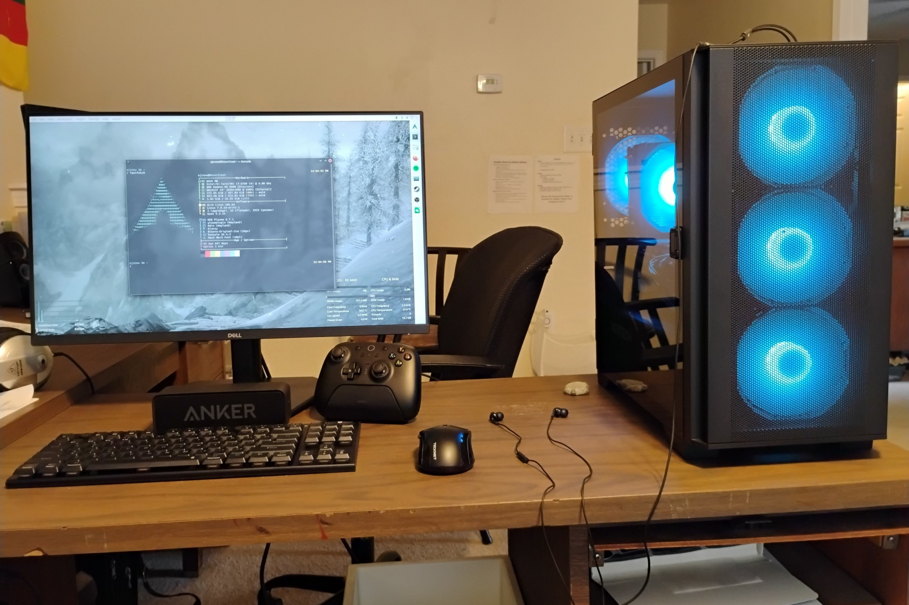

Hi, I'm Ezra Snow, or "EJSnow" online. I'm what you would call an unprofessional nerd. I enjoy Linuxing, playing video games, and I'm learning coding. I currently daily drive Arch Linux, having previously used Windows and tried several other Linux distros in between (Microsoft ending support for Windows 10 drove me to Linux). I'm hopelessly nostalgic for Windows 7 and wish I could still use it.
Check out the pages above for more! This site is probably going to be more static but once in a while I write a blog post or have a new project to share.
My main PC (The Razor Crest)
This is my main computer that I use for most things, primarily gaming on Linux. See the detailed build overview for more information.

About me
I'm Ezra Snow, an (extremely) nerdy guy who may be addicted to computers and Linux and video games (all of which I spend far too much time playing with...). I live in North Carolina, but this fall I'm heading to college in East Texas to study computer science. Aside from video games and Linuxing, I'm also learning coding and I like reading.
I also strongly dislike just about any piece of technology/software that came out since 2020 because most of them are annoying in that they refuse to respect your privacy and refuse to acknowlege you as the owner. I'm also highly mistrustful of cloud/streaming services and try not to use them when possible (one exception is Spotify because it will take me a while to gain a large enough local music collection to move off Spotify). I plan to eventually experiment with self-hosting and building a homelab, but this is something I can't really do right now because hardware is too darn expensive.
If anyone's curious, here are my favorite video games, in no particular order:
The Elder Scrolls V: Skyrim
Minecraft
Geometry Dash (technically I hate this game but at the same time I love it but I hate it)
Hollow Knight
Forza Horizon 4
Just Shapes & Beats
Games I want to play (but haven't gotten around to yet):
FH5 & FH6
Celeste
Ori and the Blind Forest
Ori and the Will of the Wisps
TES IV: Oblivion
TES III: Morrowind
Elden Ring
My all-time favorite book series is Lord of the Rings, but a close second is Swallows and Amazons. Check it out. Seriously.
My computers
Click any picture below to enlarge it
The Razor Crest
This is my main PC. It's a gaming rig first and foremost, but it's also where I store most of my data and it used to be where I did a lot of my experiments with coding and Linux, but I do most of that on my laptop now. I built it on June 25, 2026 as an upgrade to the Redstone PC. I honestly would have preferred it were smaller but it's not gigantic and I definitely plan on making my next computer much smaller.
Specs (Redstone PC → Razor Crest):
CPU: Intel Core i7-4790 → (Same CPU)
RAM: Crucial 16GB (2x8GB) DDR3 → (Same RAM)
GPU: Radeon RX 6400 → Radeon RX 6600
Storage: 500GB Crucial MX500 2.5" SSD + 1TB Western Digital Blue 2.5" HDD → (Same drives)
OS: Arch Linux + Windows 10 Pro dual-boot → Only Arch Linux
Items in bold are considered to be significant upgrades.
Twilight (my laptop)
Twilight is a Lenovo Ideapad Flex 5 15IIL05 laptop that I got for free in August 2025 from my grandparents. They had just bought a new one and didn't need it anymore, plus the keyboard was mostly dead. I discovered the keyboard literally just needed to be cleaned very, very well and then it's worked flawlessly since then. I use it for just about anything aside from most gaming as it's not great at that (but it's usable for a few lighter games like GD and Minecraft and I also got Skyrim to run pretty well at 720p with some settings tweaks). Particularly I use it for coding and playing around with Linux (an unfortunate casualty of that is that I finally rm -rf /*'d myself in May). Overall, Twilight is great and it should last me quite a while. Its battery is still quite solid too.
Specs:
CPU: Intel Core i7-1065G7
RAM: 16GB LPDDR4
GPU: Intel Iris Plus iGPU
Storage: Smasnug PM991 512GB NVMe SSD
OS: Windows 10 Home → Windows 11 Home → Arch Linux (note: Arch has a slight issue where the CPU power limit is forcibly set to 12W for some reason)
My old laptop
This was my main and only PC until I built the Redstone PC. It was originally my mom's laptop, but she upgraded a long time ago and eventually this laptop got passed to me. I used it from 2022 to 2024 just as a regular PC, and it was my introduction to PCs, Windows, PC gaming, and the wide wide world of the Internet (Up until I had that PC I had fairly limited Internet access although I had an Android tablet for a year or two before). I even started experimenting a little bit with Linux in the summer of 2024, but my experimentation was pretty limited.
After it was retired from regular PC duty, I actually turned it into a Minecraft server although it's extremely inactive and was shut down for a while, although I recently restarted it. Eventually it's going to turn into a Windows 7 nostalgia PC.
Specs:
CPU: Intel Core i7-3540M
RAM: 8GB DDR3 → 16GB DDR3
GPU: Intel HD 4000 (iGPU)
Storage: 750GB Western Digital Scorpio Black 2.5" HDD → 500GB Crucial MX500 2.5" SSD
OS: Windows 7 Professional → Windows 10 Pro → Linux Mint 22 → Debian 12 → Fedora Server 42
Blog
Idk why not have a blog lol. I will probably not post here too often.
Behold, the Razor Crest! (I've been rewatching *The Mandalorian* lately, hence the name.) I assembled this pc as an upgrade from the Redstone PC with the goal of sticking to the i7-4790 for as long as possible. I was mainly in need of a GPU upgrade anyways.
There's a saying in the Linux community that goes something like this: If you haven't rm -rf /*'d yourself yet, you're either not a real one or you've just been lucky so far. Well, my luck finally ran out and I did the thing. Yippee!
In February I decided to try to "secure" Twilight (my laptop), by enabling Secure Boot and encrypting its SSD. Now that I've pretty much finalized the setup, I thought I'd write down a detailed explanation of it. Also, welcome to the blog!
The Redstone Computer is a Dell OptiPlex 7020 SFF that I got for free last year and turned into a low-end gaming PC/daily driver. I mostly play lightweight and older games, and the computer runs all of them pretty well, typically at a mix of high and ultra settings at 1680x1050 60Hz.
Resources
Things I have for future reference; they're on here because this makes them easy to access from anywhere. These mostly aren't general purpose guides; check official documentation (like the ArchWiki) or other locations of good repute for those. ;)
My preferred route for installing Arch Linux including Secure Boot support. This mostly exists just in case I ever have to do a full reinstall/just because I want to fully document my installation route.